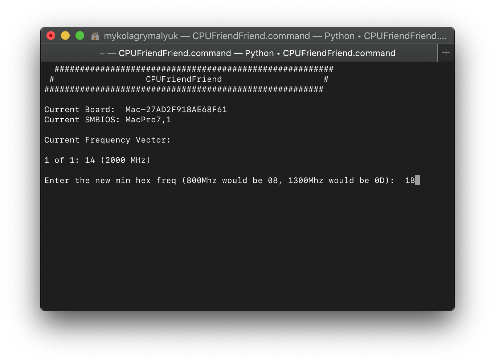
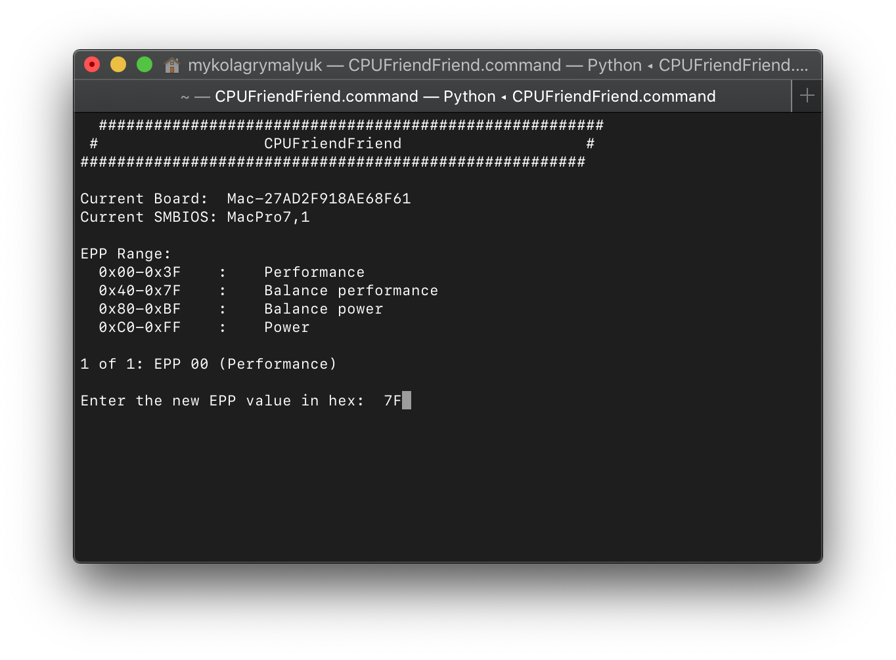
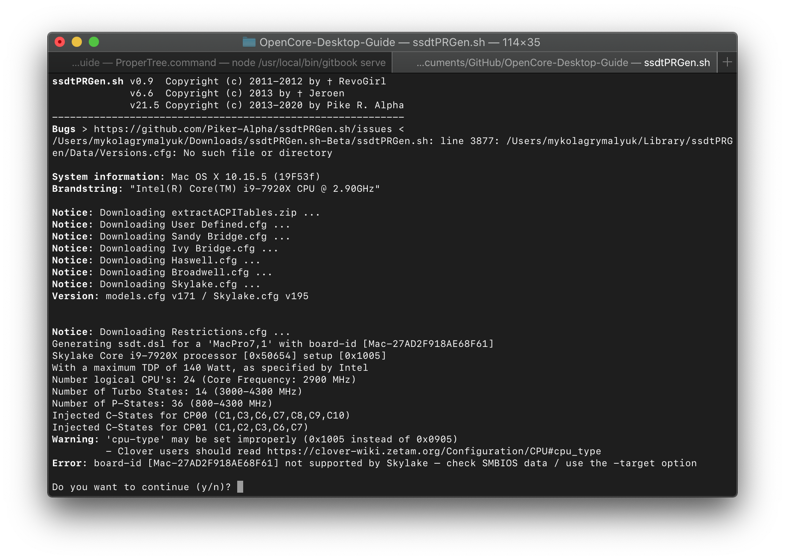
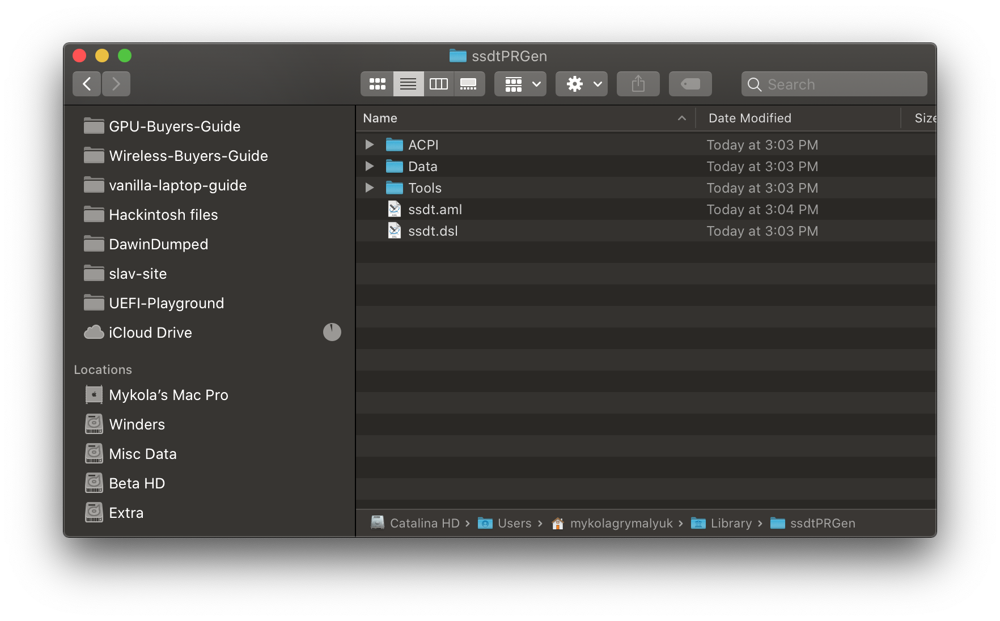

Last modified: Mon Apr 20 2020 01:58:17 GMT+0000 (Coordinated Universal Time)
Optimizing Power Management
Enabling X86PlatformPlugin
So before we can fine tune power manegement to our liking, we need to first make sure Apple's XCPM core is loaded. Note that this is supported only on Haswell and newer, Sandy and Ivy Bridge should refer to the bottom of the guide: Sandy and Ivy Bridge Power Management.
To start, grab IORegistryExplorer and look for AppleACPICPU(note if you use search, it may find entries):

As you can see from the left image, we have the X86PlatformPlugin attached meaning Apple's CPU Power Management Drivers are doing their thing. If you get something like to the right image, then there's likely an issue. Make sure to check the following:
- SSDT-PLUG.aml is both present and enabled in your config.plist and EFI/OC/ACPI
- If you're missing this, head to Getting Started With ACPI on how to make this
- SSDT-PLUG is set to the first thread of your CPU, you can check by selecting the first CPU listed(
CP00for our example) and make sure you have this in the properties:
plugin-type | Number | 0x1
X99 Note:
XCPM does not natively support Haswell-E and Broadwell-E, this means we need to spoof the CPU ID into a model that does supports XCPM:
Haswell E:
Kernel -> Emulate:- Cpuid1Data:
C3060300 00000000 00000000 00000000 - Cpuid1Mask:
FFFFFFFF 00000000 00000000 00000000
- Cpuid1Data:
Broadwell-E:
Kernel -> Emulate:- Cpuid1Data:
D4060300 00000000 00000000 00000000 - Cpuid1Mask:
FFFFFFFF 00000000 00000000 00000000
- Cpuid1Data:
Using CPU Friend
To start, we're gonna need a couple things:
- X86PlatformPlugin loaded
- CPUFriend
- CPUFriendFriend
Now lets run CPUFriendFriend.command

The min hex freq should be what the lowest possible TDP for the CPU, on Intel's ARK site search for TDP-down Frequency and convert this value to HEX. Note that not all CPUs support TDP-down Frequency, like the i7-9700T vs i7 9700. In these scenarios, you'll want to do a bit more research into your CPU, specifically:
- Minimum Multiplier (Generally stable with x10 on Intel's consumer platform)
- FSB (Front Side Bus Frequency, this is 100Mhz on most CPUs)
LPM = MinMultiplier x FSB
For this example we'll be using the i9 7920x which has a base clock of 2.9 Ghz but no LPM, so we'll choose 1.3 Ghz(13x100) and work our way up/down until we find stability.
echo "obase=16; 13" | bc

Next up is the Energy Performance Preference, EPP. This tells macOS how fast to turbo up the CPU to its full clock. 00 will tell macOS to let the CPU go as fast as it can as quickly as it can while FF will tell macOS to take things slowly and let the CPU ramp up over a much longer period of time. Depending on what you're doing and the cooling on your machine, you may want to set something in the middle. Below chart can help out a bit:
| EPP | Speed |
|---|---|
| 0x00-0x3F | Max Performance |
| 0x40-0x7F | Balance performance |
| 0x80-0xBF | Balance power |
| 0xC0-0xFF | Max Power Saving |


Once you're finished, you'll be provided with a CPUFriendDataProvider.kext and ssdt_data.aml. Which you choose is your preference but I recommend the kext variant to avoid any headaches with data injection into Windows and Linux.
Note: Load order does not matter with the CPUFriendDataProvider as it's just a plist-only kext
Sandy and Ivy Bridge Power Management
With Sandy and Ivy Bridge, consumer PCs have issues connecting to Apple's XCPM. So to get around this we need to create our own Power Management Table.
What we'll need:
- CpuPm and Cpu0Ist tables dropped
- ssdtPRgen
To drop the CpuPm and Cpu0Ist tables, head to ACPI -> Block:
| Key | Type | Value |
|---|---|---|
| All | Boolean | YES |
| Comment | String | Drop CpuPm |
| Enabled | Boolean | YES |
| OemTableId | Data | 437075506d000000 |
| TableLength | Number | 0 |
| TableSignature | Data | 53534454 |
| Key | Type | Value |
|---|---|---|
| All | Boolean | YES |
| Comment | String | Drop Cpu0Ist |
| Enabled | Boolean | YES |
| OemTableId | Data | 4370753049737400 |
| TableLength | Number | 0 |
| TableSignature | Data | 53534454 |
Once this is done, we can now grab ssdtPRgen and run it:

Once you're done, you'll be provided with an SSDT.aml under /Users/your-name>/Library/ssdtPRGen/ssdt.dsl, you can easily find it with the Cmd+Shift+G shortcut and pasting ~/Library/ssdtPRGen/

Remember to now add this to both EFI/OC/ACPI and your config.plist, I recommend renaming it to SSDT-PM to find it more easily